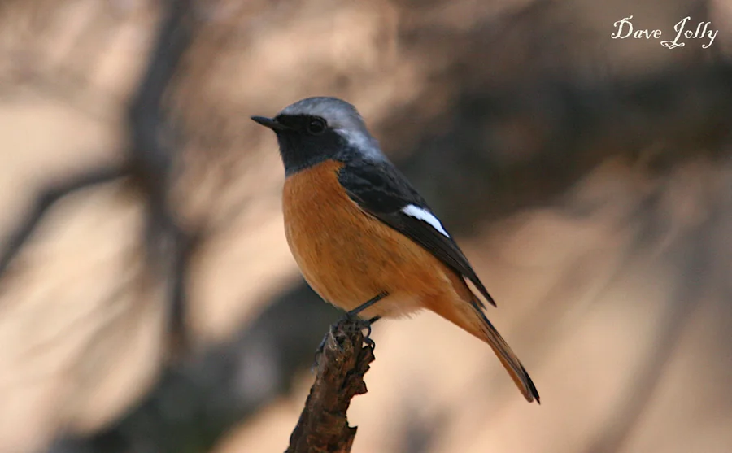

鸟类 · 动物界
北红尾鸲 Phoenicurus auroreus

繁殖于东亚北部的红尾鸲，雄鸟橙红与黑灰对比鲜明，常在不高的枝头抖动尾巴。
- 分类
- 门脊索动物门纲鸟纲目雀形目科鹟科属红尾鸲属
- 栖息环境
- 林缘、灌丛、次生林、公园与农田边缘
- 地理分布
- 繁殖于中国东北、华北及东亚北部，冬季南迁至中国南方与东南亚
- 保护级别
- IUCN 无危（LC）
物种志
北红尾鸲体长约 13–15 cm。雄鸟头顶与后颈灰白，脸、喉和背黑色，胸腹橙红，尾羽中央黑、两侧橙红；雌鸟整体灰褐，尾羽同样带橙色。它常停在灌丛、林缘或电线上的低处，发现昆虫后飞到地面或空中捕捉，尾羽会不自觉地上下抖动。
北红尾鸲繁殖于中国东北、华北及俄罗斯远东、朝鲜半岛，冬季南迁到中国南方、日本和东南亚。它适应力较强，也出现在城市公园和农田边缘，常在墙缝、树洞或人工巢箱中筑巢。迁徙季节是观察它的好时机，雄鸟鲜明的橙红色在落叶间非常醒目。
形态与习性
- 体长约 13–15 cm
- 雄鸟头灰白、脸黑、胸腹橙红
- 雌鸟灰褐色，尾羽带橙色
- 习性常抖动尾羽，在低枝与地面间捕虫
- 繁殖墙缝、树洞或巢箱中筑巢
趣味知识
- 北红尾鸲雄鸟的橙红色胸腹在落叶间非常醒目。
- 它常在低枝上抖动尾巴，这是红尾鸲类的典型动作。
- 冬季会南迁，是中国南方常见的冬候鸟之一。